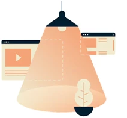
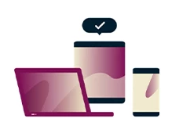
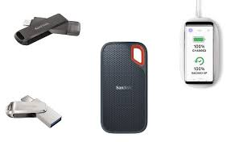
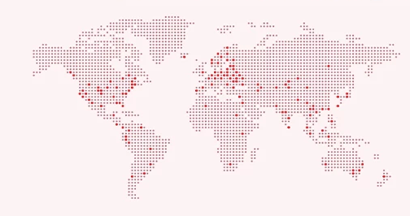

Each chat request comes complete with the visitor's country, the page they're on, and the department they've selected. You also get their website footprint, their device details, the operating system they're using, and previous chats. This helps you get to the heart of the matter without too many questions.
One click to transfer data Worldwide
People speak about four times faster than they type. Zoho SalesIQ's live chat software comes with voice note so visitors and agents don't have to type long paragraphs in the website live chat app to explain complex questions and solutions.


Use UniversalCHAT on every device
Software that can run on a variety of hardware platforms or software architectures. Platform-independent software can be used in many different environments, requiring less planning and translation across an enterprise.
Stroger data protection
You can manage your online privacy and security with best in class encryption

Work seamlessly
You can ctay connected seamlessly
Lightning quick connectivity
Easily connect with your friends. Via video calls ,voice call and many more things.

1M+
1.5M+
The Indian business UGC Platforms offers UniversalCHAT, a freeware, cross-platform, centralised instant messaging and voice-over-IP service, to users all over the world.
It enables users to exchange photographs, documents, user locations, voice and video calls, text and voice messages, and other data.